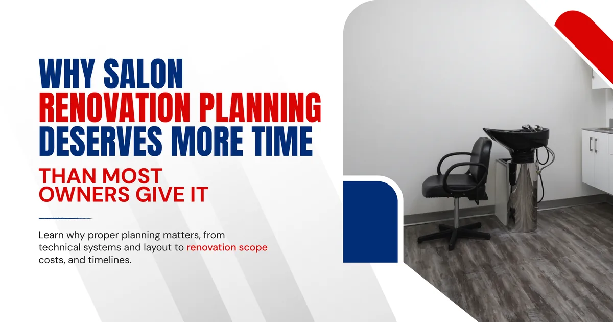
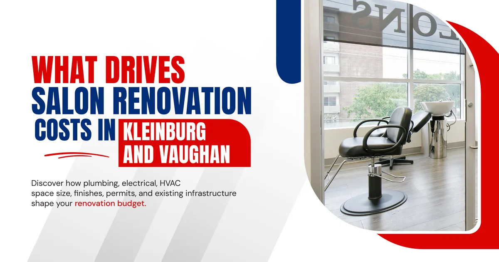
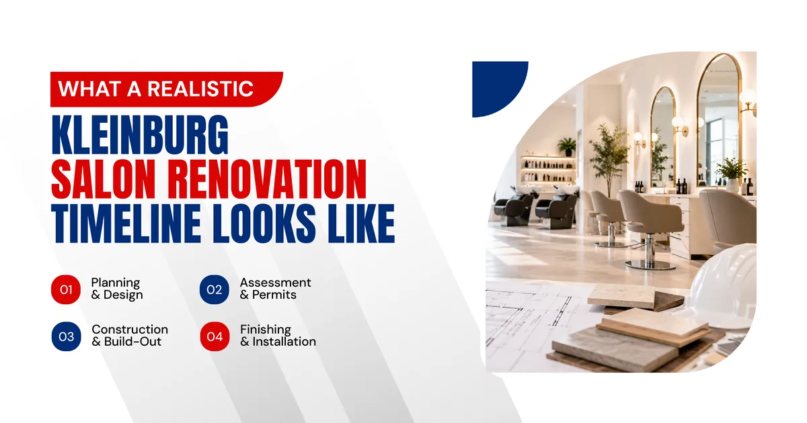
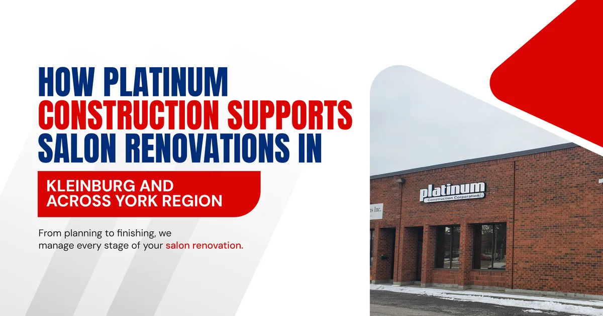

But before the clients start booking and the chairs fill up, there is a renovation to plan. And for many salon business owners in Kleinburg, the planning stage is where the most important decisions get made, and where the most costly mistakes tend to happen if the process is not approached carefully.
This guide walks through what a salon renovation realistically costs in Kleinburg, what the planning process actually involves, and how to set your project up for a smooth build from day one.

Why Salon Renovation Planning Deserves More Time Than Most Owners Give It
There is a temptation when you find the right space to move fast. Sign the lease, call a contractor, get moving. The problem with moving too fast in this phase is that salon renovations involve a level of technical complexity that most commercial spaces do not.
Plumbing for shampoo bowls, electrical capacity for professional styling equipment, ventilation designed to handle chemical fumes, and a layout that supports smooth daily operations all need to be planned together before a single wall opens up. When these decisions get made in the right order, the renovation moves efficiently and the finished space works the way it needs to. When they get made on the fly, costs climb and timelines stretch.
A Kleinburg general contractor with experience in salon build outs understands this sequence and helps you move through it without the expensive detours.
The Difference Between a Cosmetic Refresh and a Full Renovation
Not every salon renovation is the same scope. Some businesses need a full gut renovation where plumbing, electrical, and mechanical systems are rebuilt from scratch. Others are working with a space that already has functional infrastructure and just needs a layout update, new finishes, and fixture replacements.
Understanding which category your project falls into before you start budgeting is essential. A cosmetic refresh in Kleinburg or Woodbridge might run between twenty and fifty thousand dollars depending on size and finish level. A full renovation with significant plumbing and electrical work can easily reach one hundred and fifty thousand dollars or more, particularly in older commercial spaces where the existing infrastructure needs to be brought up to current standards.

What Drives Salon Renovation Costs in Kleinburg and Vaughan
Salon renovation costs are not arbitrary. They follow a fairly predictable logic once you understand what the major cost drivers are. Here is a breakdown of the elements that most significantly affect the final number.
| Cost Driver | Why It Affects the Budget |
|---|---|
| Number of shampoo bowl stations | Each station requires dedicated plumbing rough in with supply and drain lines |
| Electrical panel capacity | Older spaces often need panel upgrades to support salon equipment loads |
| Ventilation and HVAC | Chemical fume extraction and fresh air requirements add to mechanical costs |
| Existing infrastructure condition | Older buildings in Kleinburg and Woodbridge may need significant upgrades |
| Finish level | Premium flooring, custom millwork, and high end fixtures cost more |
| Space size | Larger spaces cost more in materials, labour, and finishing time |
| Permit requirements | Complexity of permits affects both cost and timeline |
The most consistent advice from experienced York Region contractors is this: get a thorough assessment of your existing space before finalizing your budget. What is inside the walls of an older Kleinburg commercial space is not always what it appears to be from the outside, and those hidden conditions are the most common source of renovation cost surprises.
Planning Your Salon Renovation Step by Step
A well planned salon renovation in Kleinburg follows a clear sequence. Skipping steps or trying to compress this process to save time usually results in the opposite outcome.
Step One: Finalize Your Layout Before Anything Else
Shampoo bowl placement drives plumbing rough in location. Styling station count drives electrical capacity planning. These are decisions that get locked into the walls early in the renovation process, and changing them later is expensive. Finalize your layout, confirm your station count, and decide on your reception and retail configuration before any construction work begins.
Step Two: Assess the Existing Infrastructure
Before pricing anything, a qualified Kleinburg general contractor should walk the space and assess what is already there. Electrical panel capacity, existing plumbing condition, current HVAC setup, and structural considerations all affect what the renovation will actually cost and how long it will take.
Step Three: Get a Detailed, Itemized Estimate
A reliable estimate from a Vaughan commercial construction company breaks down every major cost category separately. Plumbing, electrical, mechanical, framing, drywall, flooring, fixtures, permits, and contingency should all appear as distinct line items. A vague total number with minimal detail is not an estimate you can trust or plan around.
Step Four: Apply for Permits Early
Salon renovations in Kleinburg fall under the City of Vaughan's building permit framework. Projects involving plumbing, electrical, and mechanical changes require permits that take time to process. In Vaughan and across York Region, permit timelines typically run four to eight weeks depending on scope and current workload. Starting the permit application as early as possible prevents the frustrating situation of a space sitting idle while waiting for approvals.
Step Five: Plan the Construction Sequence
A salon renovation involves multiple trades working in a specific order. Demolition comes first, followed by rough in work for plumbing and electrical, then framing and drywall, then flooring and fixtures, then final finishes and inspections. An experienced Woodbridge ON construction team manages this sequence so each trade arrives when the site is actually ready for them, rather than waiting around or working in each other's way.

What a Realistic Kleinburg Salon Renovation Timeline Looks Like
New salon owners often underestimate how long the renovation process takes from planning to opening. Here is a realistic view of the stages and how they typically flow in the Kleinburg and Vaughan area.
| Stage | Typical Duration |
|---|---|
| Layout finalization and design | 2 to 4 weeks |
| Site assessment and detailed estimating | 1 to 2 weeks |
| Permit application and approval | 4 to 8 weeks |
| Demolition and site preparation | 1 to 2 weeks |
| Plumbing and electrical rough in | 2 to 3 weeks |
| Framing, drywall, and ceiling work | 2 to 3 weeks |
| Flooring, fixtures, and finish work | 2 to 3 weeks |
| Final inspections and occupancy | 1 to 2 weeks |
From the start of the planning process to opening day, most salon renovations in the Kleinburg and Vaughan area take between four and six months. Smaller projects with simpler scope can move faster. Larger renovations with significant infrastructure work take longer.
Building your lease start date and grand opening plans around this realistic timeline prevents the stress of a delayed opening that was always going to happen given the actual scope of the work.
Common Planning Mistakes Kleinburg Salon Owners Make
Even experienced business people make these mistakes when going through a salon renovation for the first time. Knowing them in advance is the best way to avoid them.
Budgeting based on a verbal quote rather than a written, itemized estimate is the most common early mistake. A number shared in a phone call or a quick site visit is not a budget you can rely on. Always insist on a written estimate that breaks down costs clearly before making any financial commitments.
Choosing a general contractor without salon specific experience is another pattern that shows up often across Vaughan and York Region. A Concord commercial contractor with no history of salon build outs may be perfectly competent at standard commercial renovations but will miss details that only come from working in salon spaces before. Those missed details tend to show up as change orders once construction is underway.
Underestimating the value of a contingency buffer is the third mistake. No matter how carefully a renovation is planned, older commercial spaces in Kleinburg and surrounding areas carry inherent uncertainty. Setting aside ten to fifteen percent of your total budget for unexpected conditions is not pessimism. It is standard practice for a reason.

How Platinum Construction Supports Salon Renovations in Kleinburg and Across York Region
At Platinum Construction, we have built and renovated salon studios across Kleinburg, Woodbridge, Vaughan, Maple, Concord, Vellore Village, and Thornhill. We understand what salon spaces actually need to function well and we understand the local permit and inspection landscape that affects renovation timelines in Vaughan and York Region.
Every project we take on starts with a thorough site assessment. We look at what is actually inside the existing space before any pricing is finalized so the estimate we provide reflects the real project, not an optimistic version of it. From there we develop a detailed, itemized proposal that you can plan your budget around with confidence.
We assign a dedicated project manager to every renovation who coordinates all trades, manages the permit process, and keeps you updated throughout construction. You will know what is happening on your site at every stage and who to contact if you have a question.
If you are planning a salon renovation in Kleinburg or anywhere across Vaughan and York Region, we are ready to walk through the project with you from the very beginning.
Frequently Asked Questions
How much does a salon renovation cost in Kleinburg
Costs vary based on scope and existing conditions. Cosmetic updates can start around twenty thousand dollars while full renovations with plumbing and electrical work often range from eighty thousand to over one hundred and fifty thousand dollars.
How long does a salon renovation take in Vaughan
Most salon renovations in Vaughan and Kleinburg take between four and six months from the start of planning to opening day, including permit processing time.
Do I need permits for a salon renovation in Kleinburg
Yes. Any work involving plumbing, electrical, or mechanical changes requires building permits through the City of Vaughan. A local contractor manages this as part of the project.
What is the most expensive part of a salon renovation
Plumbing and electrical work tend to drive the highest costs, particularly in older spaces where infrastructure needs upgrading to support salon equipment demands.
Why should I hire a Kleinburg general contractor rather than a general renovation company
Salon builds have specific technical requirements around plumbing, electrical, and ventilation that a general renovation company without salon experience is likely to miss or underestimate.
What should I do before signing a commercial lease for a salon in Kleinburg
Have a qualified contractor assess the space first to understand what the renovation will realistically cost before you commit to the lease terms.
How do I know if my space needs a cosmetic refresh or a full renovation
A site assessment by an experienced contractor will evaluate the existing plumbing, electrical, and mechanical infrastructure and give you an honest answer about what the space actually requires.
Final View on Salon Renovation in Kleinburg
A well planned salon renovation in Kleinburg is one of the most important investments you will make in your business. The time spent getting the planning right, choosing the right contractor, and understanding the realistic costs and timeline pays off in a space that works the way you need it to from the day you open.
If you are getting ready to plan a salon renovation in Kleinburg, Vaughan, or anywhere across York Region, Platinum Construction is ready to help. Visit platinumconstruction.com to book a free consultation and take the first step toward your new space.